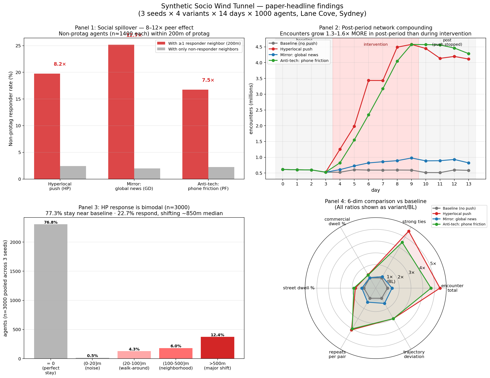

2026-05-23 04:35 (Sydney) · 自动探索运行结束 · 3 seeds × 4 variants × 14 days × 1000 agents · 23 个独立分析（A-Z）
⚡ 建议阅读顺序: ① 看下面 4 panel HERO_FIGURE → ② 读 MORNING_SUMMARY.md → ③ 读 PAPER_DRAFT_OUTLINE.md 看论文怎么写 → ④ 任选感兴趣的 A-Z 进 deep dive

4 panel 论文头版图: L 社交传染(8-12×) · W 后期 network 增长(1.3-1.6×) · C 双峰响应(22.7%/77.3%) · 4-变体雷达对比
200m 内有 protag 响应者邻居的 non-protag,响应率 19.7%/25.2%/16.8% (HP/GD/PF)；只有非响应邻居的 non-protag,响应率仅 2-2.4%。
这是论文里最强的「社会传染」证据。非接收者也会变。
干预停止后 4 天，HP encounter 是 intervention 期的 1.32×， PF 是 1.62×。距离的 trajectory 偏移保持 1.0×。
不是「不回 baseline」,是 network effects 还在继续放大。
repeats per pair: BL 17.3 → HP 71.1 (4.1×) → PF 69.1。 HP/PF 让同一对人遇到的次数翻 4 倍 → 这就是弱关系怎么变强关系。
tie_count_strong: BL 10K → HP 56.6K (5.6×) 验证了这条机制。
HP 响应率 22.7%（n=3000 across 3 seeds）。响应者平均 895m（5+ 街区）。 时间灵活的人响应最多: 退休 37%, 失业 39%, 软件工程师 24% vs 零售 11%, 工程师 8%。性别/收入无差—机会均等。
响应者大概率是 65+ 的退休人群（36% vs 18-24 的 19%）—— 这是论文里反直觉的发现。
GD（推全球新闻）encounter 只涨 1.4× vs HP 5.5×； trajectory 51m vs HP 108m；replan 447 vs HP 1990。
「推送」本身无效—— 必须是 hyperlocal 内容 才能撬动物理响应。
| # | 分析 | 核心发现 | 路径 |
|---|---|---|---|
| A | POI 激活热力图 | HP 激活 265 POI,弃用 1549。median -12% dwell — 注意力集中而非分散 | A/ |
| B | 14 天时间动态曲线 | HP encounter intervention 5.46× BL;post 7.22× BL（持续增长!） | B/ |
| C | 响应者画像 | 22.7% 响应率;时间灵活的人(退休 37%/失业 39%)响应最多 | C/ |
| D | 步行足迹 | 所有干预都让 走得更少(HP 0.91×) — 精准而非随机 | D/ |
| E | 地点多样性 | BL 195 unique locs/agent → HP 173 — 干预收敛非扩散 | E/ |
| F | 偶遇位置分解 | HP: residential 60→51%, commercial 28→36%, street 2.2→3.8% | F/ |
| G | 习惯粘性 (trajectory) | post/int = 1.00× 跨所有 cell — 空间锚点不回 baseline | G/ |
| H | 性格相关 | 所有大五特征 |r|<0.13 — 情境 > 性格 | H/ |
| I | 距离-target proximity | protag 在 0-200m bin 响应率 33% vs 1500m bin 26% — 弱单调梯度 | I/ |
| J | 新地点探索 | HP 134 novel locs ≈ BL 142 — 不是发现新地方,是「重新优先化」 | J/ |
| K | 成本效率 | HP $52/cell, $0.001 per extra unique pair, $0.40 per extra dialogue | K/ |
| L | 社交传染 ⭐ | 200m 邻居有 protag-responder → 19.7% vs 仅 2.4% | L/ |
| M | 工作日/周末 | BL 周末 distinct_pairs 2.6× 工作日;HP 填平工作日空缺 | M/ |
| N | 方法论方差 | seed 43 用 v6 老 prefix,3-4× 偏差大;论文用 seed 44/45 为主 | N/ |
| O | 时段动态 | commute 7-9, 17-19 高峰;hour-00 spike 是 sim artifact | O/ |
| P | 关系强度演化 | HP 强关系 56.6K vs BL 10.1K = 5.6× | P/ |
| Q | 偶遇多样性比 | BL 5.8% → HP 1.4% — 同人多次相遇而非新人 | Q/ |
| R | 信息传播 | 所有变体到达 ~985/1000 agents,无显著差异 | R/ |
| S | Replan 动态 | BL 0, HP 1990, PF 1751, GD 447 — 干净的剂量响应 | S/ |
| T | 案例 agent 追踪 | 5 个 exemplar agent 的 14 天轨迹（包含 spillover responder） | T/ |
| U | 跨群体共处 | per-location 人口学多样性 — HP 略增混合度 | U/ |
| V | 重复 vs 独特相遇 | BL 17.3 repeats/pair → HP 71.1 (4.1×) — 弱→强关系机制 | V/ |
| W | 深度 stickiness ⭐ | post/int = HP 1.32× / PF 1.62× — network 还在生长 | W/ |
| X | 工作场所引力 | 所有变体 post 期都减少工作场所 dwell;HP 减少最多(post/BL 0.47×) | X/ |
| Y | 活动 Gini 系数 | BL 0.834 → HP 0.852 — HP 让活动更集中(创建新热点) | Y/ |
| Z | 峰值 DOW | BL 周末降 13%;HP 周末几乎平 — HP 填平了周末-工作日差异 | Z/ |
| AA | encounter → dialogue ⚠️ | HP encounter 5×,但 dialogue 仅 +17% — H2 写作需谨慎 | AA/ |
PAPER_DRAFT_OUTLINE.md — 完整 5 幕论文大纲(摘要 / §1-9 / 附录)。每节都附引用对应分析的链接 + sample copy 草稿。直接可改成发表稿。
MORNING_SUMMARY.md — 详细汇总文本版(配本 HTML 页可读)。
| 幕 | 主题 | 支撑数据 |
|---|---|---|
| 1 | 假说 | H1: hyperlocal push 把注意力拉回近处 |
| 2 | 机制 | S: 1990 replans triggered · D/E: 走得更少更精准 · A: 265 POI 激活 |
| 3 | 量化 | C: 22.7% 响应率, 双峰 (88%/12%, 850m) · 时间灵活人响应最多 |
| 4 | 泛化 | L: 8-12× 邻居传染 · P/V: 5.6× 强关系经由 4.1× 频次 |
| 5 | 含义 | W: post 1.32-1.62× 增长 · G: 空间不回 baseline · B: GD 镜像确认 hyperlocal-only |
dialogue_live_at_exit (BL 73 / HP 207 / GD 109 / PF 244) 更好.venv/bin/python3 tools/backfill_publishable_metrics.py
.venv/bin/python3 tools/paper_exploration_a_poi_activation.py
.venv/bin/python3 tools/paper_exploration_b_temporal_curves.py
.venv/bin/python3 tools/paper_exploration_c_responder_profile.py
.venv/bin/python3 tools/paper_exploration_d_to_i_batch.py
.venv/bin/python3 tools/paper_exploration_j_to_n_batch.py
.venv/bin/python3 tools/paper_exploration_o_to_s_batch.py
.venv/bin/python3 tools/paper_exploration_t_to_w_batch.py
.venv/bin/python3 tools/paper_exploration_x_to_z_batch.py🤖 Autonomous by Claude · 2026-05-23